Joint Models for Longitudinal and Time-to-Event Data
jm.RdFits multivariate joint models for longitudinal and time-to-event data.
jm(Surv_object, Mixed_objects, time_var, functional_forms = NULL, data_Surv = NULL, id_var = NULL, priors = NULL, control = NULL, ...) value(x) slope(x) area(x) vexpit(x) Dexpit(x) vexp(x) Dexp(x) tv(x, knots = NULL, ord = 2L)
Arguments
| Surv_object | an object:
|
|---|---|
| Mixed_objects | a
|
| time_var | a |
| functional_forms | a |
| data_Surv | the |
| id_var | a |
| priors | a named
|
| control | a list of control values with components:
|
| x | a numeric input variable. |
| knots | a numeric vector of knots. |
| ord | an integer denoting the order of the spline. |
| ... | arguments passed to |
Details
The mathematical details regarding the definition of the multivariate joint model, and the capabilities of the package can be found in the vignette in the doc directory.
Value
A list of class jm with components:
a list of the MCMC samples for each parameter.
a list of the acceptance rates for each parameter.
a matrix of dimensions [((n_iter - n_burnin)/n_thin)*n_thin, number of individuals], with element [i, j] being the conditional log-Likelihood value of the \(i^{th}\) iteration for the \(j^{th}\) individual.
a matrix of dimensions [((n_iter - n_burnin)/n_thin)*n_thin, number of individuals], with element [i, j] being the marginal log-Likelihood value of the \(i^{th}\) iteration for the \(j^{th}\) individual.
an object of class proc_time with the time used to run jm.
a list with posterior estimates of the parameters (means, medians, standard deviations, standard errors, effective sample sizes, tail probabilities, upper and lower bounds of credible intervals, etc.).
a list of lists with fit statistics (DIC, pD, LPML, CPO, WAIC) for both conditional and marginal formulations.
a list of data used to fit the model.
a list of components of the fit useful to other functions.
a list with the initial values of the parameters.
a copy of the control values used to fit the model.
a copy of the priors used to fit the model.
the matched call.
Author
Dimitris Rizopoulos d.rizopoulos@erasmusmc.nl
See also
Examples
# \donttest{ ################################################################################ ############################################## # Univariate joint model for serum bilirubin # # 1 continuous outcome # ############################################## # [1] Fit the mixed model using lme(). fm1 <- lme(fixed = log(serBilir) ~ year * sex + I(year^2) + age + prothrombin, random = ~ year | id, data = pbc2) # [2] Fit a Cox model, specifying the baseline covariates to be included in the # joint model. fCox1 <- coxph(Surv(years, status2) ~ drug + age, data = pbc2.id) # [3] The basic joint model is fitted using a call to jm() i.e., joint_model_fit_1 <- jm(fCox1, fm1, time_var = "year", n_chains = 1L, n_iter = 11000L, n_burnin = 1000L) summary(joint_model_fit_1)#> #> Call: #> jm(Surv_object = fCox1, Mixed_objects = fm1, time_var = "year", #> n_chains = 1L, n_iter = 11000L, n_burnin = 1000L) #> #> Data Descriptives: #> Number of Groups: 312 Number of events: 140 (44.9%) #> Number of Observations: #> log(serBilir): 1945 #> #> DIC WAIC LPML #> marginal 11693.99 106643.66 -40568.28 #> conditional 10628.49 35400.49 -30794.04 #> #> Random-effects covariance matrix: #> #> StdDev Corr #> (Intr) 1.4010 (Intr) #> year 0.2518 -0.1457 #> #> Survival Outcome: #> Mean StDev 2.5% 97.5% P #> drugD-penicil -0.1444 0.3378 -0.7934 0.5271 0.6812 #> age 0.0601 0.0161 0.0288 0.0924 0.0002 #> value(log(serBilir)) 1.0264 0.2022 0.6470 1.4083 0.0000 #> #> Longitudinal Outcome: log(serBilir) (family = gaussian, link = identity) #> Mean StDev 2.5% 97.5% P #> (Intercept) -0.3895 1.0003 -2.3509 1.6233 0.6624 #> year 0.2857 0.3472 -0.4455 1.0046 0.3646 #> sexfemale -0.2289 0.4493 -1.1141 0.6771 0.5878 #> I(year^2) -0.0067 0.0308 -0.0707 0.0570 0.7974 #> age -0.0039 0.0187 -0.0421 0.0345 0.8212 #> prothrombin 0.1006 0.0705 -0.0429 0.2471 0.1372 #> year:sexfemale -0.0434 0.0643 -0.1736 0.0841 0.4962 #> sigma 0.8310 0.2089 0.5663 1.3354 0.0000 #> #> MCMC summary: #> chains: 1 #> iterations per chain: 11000 #> burn-in per chain: 1000 #> thinning: 1 #> time: 32 sec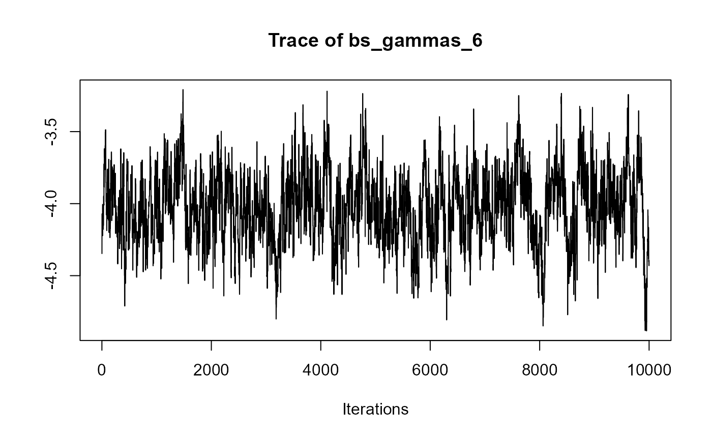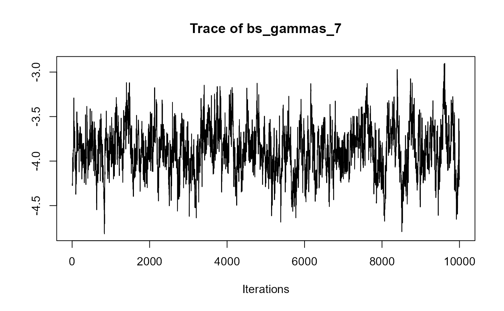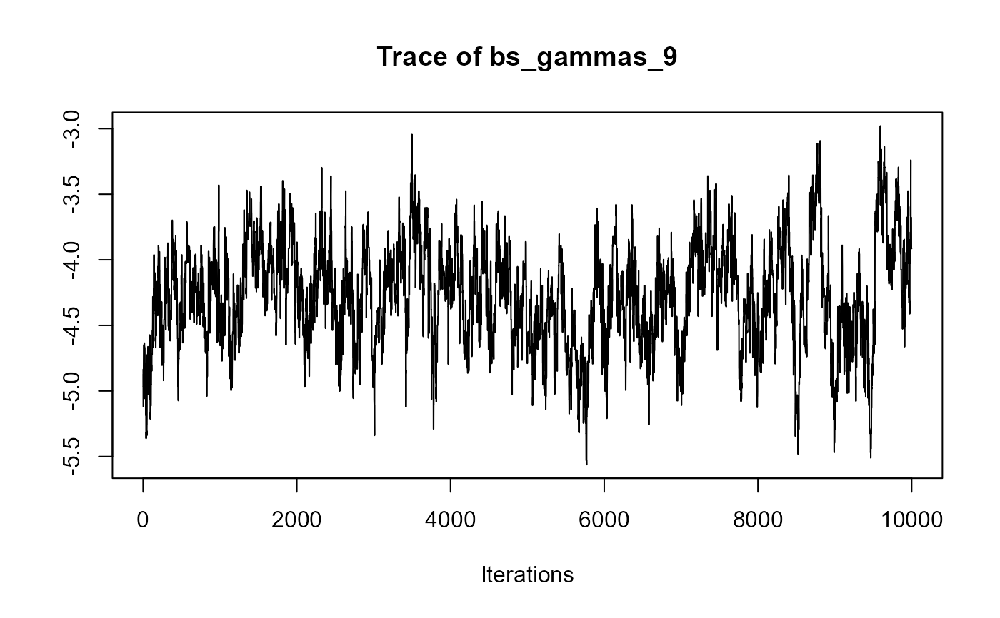################################################################################ ########################################################################## # Multivariate joint model for serum bilirubin, hepatomegaly and ascites # # 1 continuous outcome, 2 categorical outcomes # ########################################################################## # [1] Fit the mixed-effects models using lme() for continuous # outcomes and mixed_model() for categorical outcomes. fm1 <- lme(fixed = log(serBilir) ~ year * sex, random = ~ year | id, data = pbc2) fm2 <- mixed_model(hepatomegaly ~ sex + age + year, data = pbc2, random = ~ year | id, family = binomial()) fm3 <- mixed_model(ascites ~ year + age, data = pbc2, random = ~ year | id, family = binomial()) # [2] Save all the fitted mixed-effects models in a list. Mixed <- list(fm1, fm2, fm3) # [3] Fit a Cox model, specifying the baseline covariates to be included in the # joint model. fCox1 <- coxph(Surv(years, status2) ~ drug + age, data = pbc2.id) # [4] The joint model is fitted using a call to jm() i.e., joint_model_fit_2 <- jm(fCox1, Mixed, time_var = "year", n_chains = 1L, n_iter = 11000L, n_burnin = 1000L) summary(joint_model_fit_2)#> #> Call: #> jm(Surv_object = fCox1, Mixed_objects = Mixed, time_var = "year", #> n_chains = 1L, n_iter = 11000L, n_burnin = 1000L) #> #> Data Descriptives: #> Number of Groups: 312 Number of events: 140 (44.9%) #> Number of Observations: #> log(serBilir): 1945 #> hepatomegaly: 1884 #> ascites: 1885 #> #> DIC WAIC LPML #> marginal 7153.491 8344.658 -4824.331 #> conditional 10536.415 12035.202 -7791.407 #> #> Random-effects covariance matrix: #> #> StdDev Corr #> (Intr) 0.9949 (Intr) year (Intr) year (Intr) #> year 0.1763 0.3911 #> (Intr) 3.5054 0.5164 0.3504 #> year 0.6374 0.0830 0.3394 -0.3262 #> (Intr) 3.1489 0.5996 0.4963 0.5037 0.0263 #> year 0.4841 0.3990 0.5994 0.3666 0.2758 0.0073 #> #> Survival Outcome: #> Mean StDev 2.5% 97.5% P #> drugD-penicil -0.2243 0.2975 -0.8075 0.3522 0.4460 #> age 0.0358 0.0179 -0.0041 0.0660 0.0750 #> value(log(serBilir)) 0.7013 0.2813 0.0466 1.1842 0.0412 #> value(hepatomegaly) -0.0105 0.0963 -0.2133 0.1639 0.9596 #> value(ascites) 0.4829 0.2609 0.1462 1.1451 0.0000 #> #> Longitudinal Outcome: log(serBilir) (family = gaussian, link = identity) #> Mean StDev 2.5% 97.5% P #> (Intercept) 0.6848 0.2432 0.2039 1.1488 0.0074 #> year 0.2485 0.0639 0.1241 0.3818 0.0000 #> sexfemale -0.2183 0.2524 -0.6955 0.2751 0.3824 #> year:sexfemale -0.0668 0.0651 -0.2055 0.0574 0.2882 #> sigma 0.3812 0.0146 0.3565 0.4154 0.0000 #> #> Longitudinal Outcome: hepatomegaly (family = binomial, link = logit) #> Mean StDev 2.5% 97.5% P #> (Intercept) 0.2806 1.3685 -2.3959 3.0154 0.8464 #> sexfemale -0.9053 0.7281 -2.3533 0.5084 0.2082 #> age 0.0132 0.0224 -0.0316 0.0562 0.5468 #> year 0.2774 0.1490 -0.0155 0.5671 0.0596 #> #> Longitudinal Outcome: ascites (family = binomial, link = logit) #> Mean StDev 2.5% 97.5% P #> (Intercept) -9.6697 1.8340 -13.6452 -6.4373 0e+00 #> year 0.6264 0.1733 0.3125 1.0102 0e+00 #> age 0.0872 0.0263 0.0388 0.1429 2e-04 #> #> MCMC summary: #> chains: 1 #> iterations per chain: 11000 #> burn-in per chain: 1000 #> thinning: 1 #> time: 1.1 min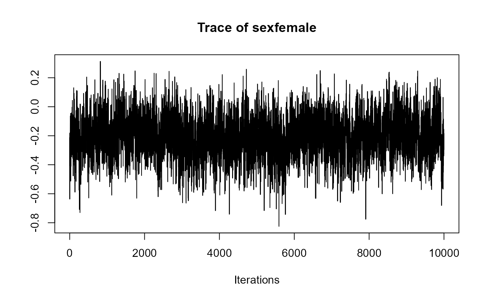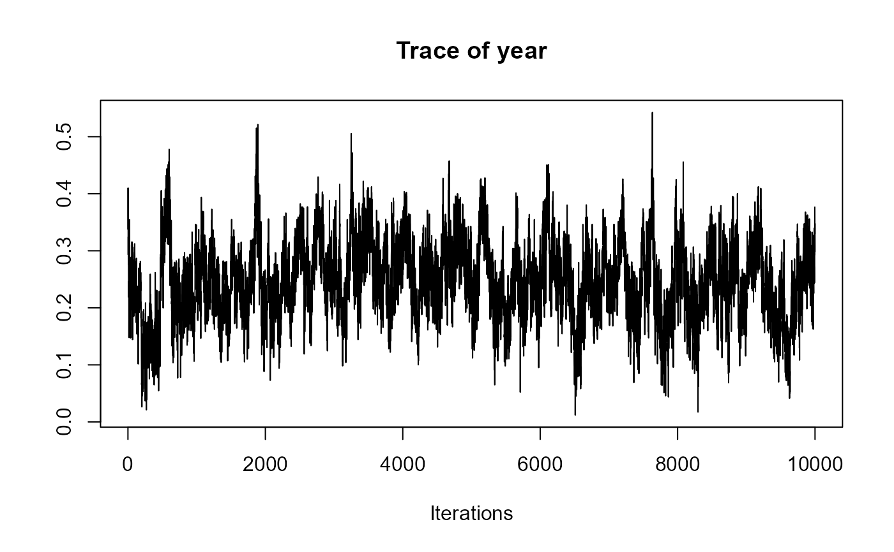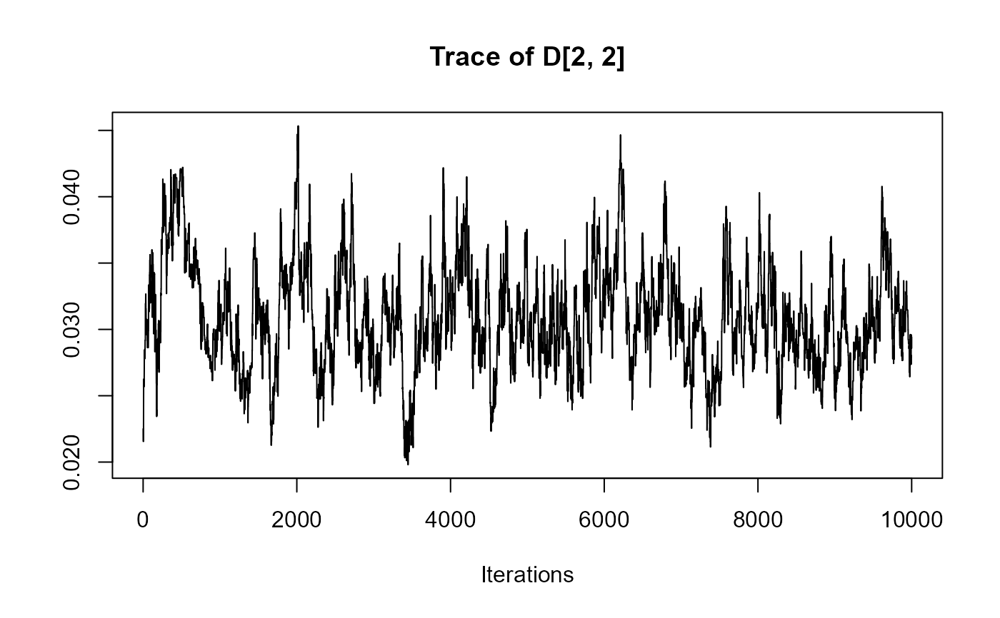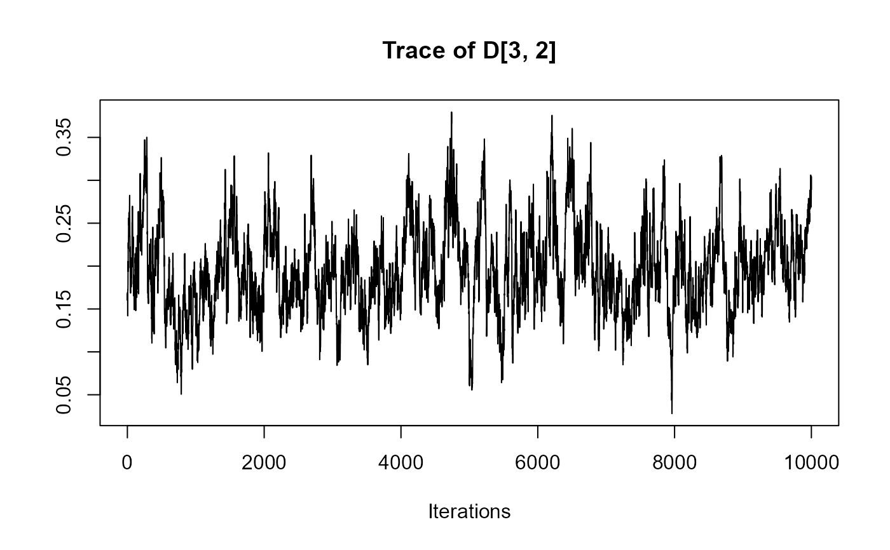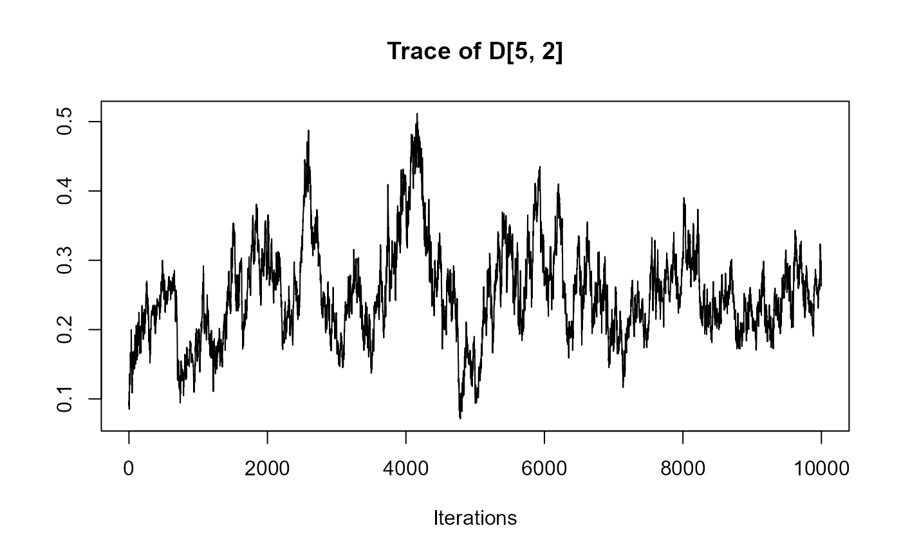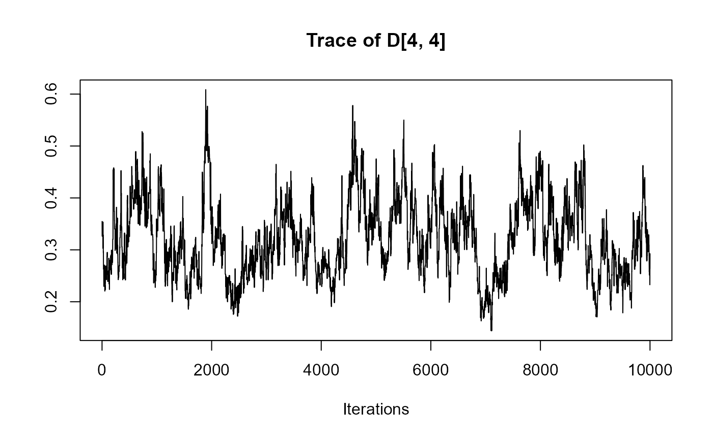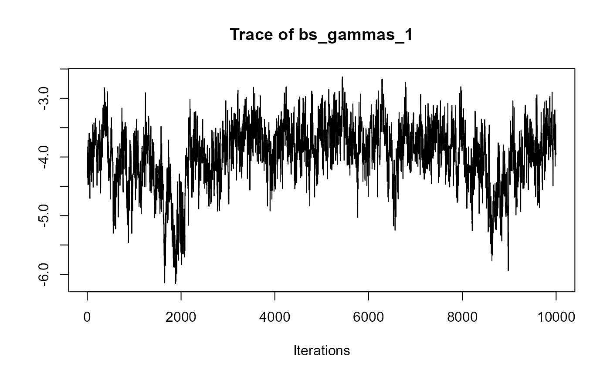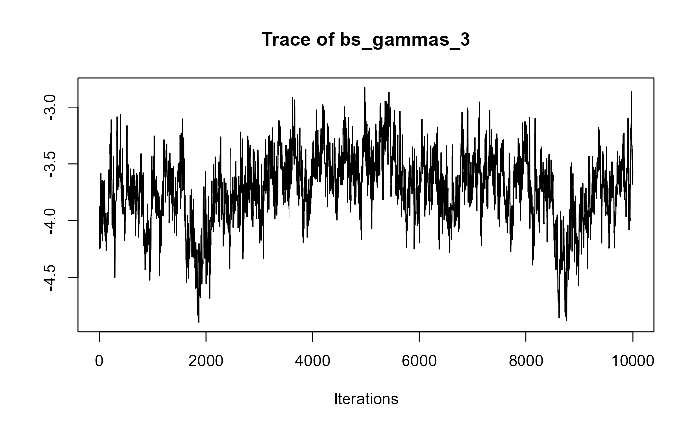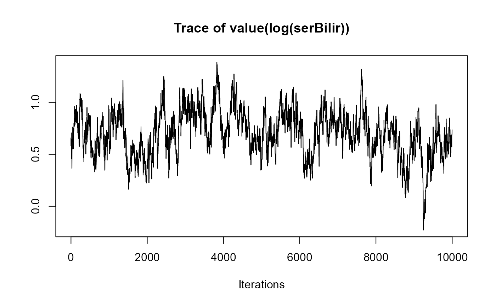################################################################################ ###################### # Slope & Area Terms # ###################### # We extend model 'joint_model_fit_2' by including the value and slope term for # bilirubin, the area term for hepatomegaly (in the log-odds scale), and the # value and area term for spiders (in the log-odds scale). # To include these terms into the model, we specify the 'functional_forms' # argument. This should be a list of right side formulas. Each component of the # list should have as name the name of the corresponding outcome variable. In # the right side formula we specify the functional form of the association using # functions 'value()', 'slope()' and 'area()'. # Notes: (1) For terms not specified in the 'functional_forms' list, the default # value functional form is used. # [1] Fit the mixed-effects models using lme() for continuous outcomes # and mixed_model() for categorical outcomes. fm1 <- lme(fixed = log(serBilir) ~ year * sex, random = ~ year | id, data = pbc2) fm2 <- mixed_model(hepatomegaly ~ sex + age + year, data = pbc2, random = ~ year | id, family = binomial()) fm3 <- mixed_model(ascites ~ year + age, data = pbc2, random = ~ year | id, family = binomial()) # [2] Save all the fitted mixed-effects models in a list. Mixed <- list(fm1, fm2, fm3) # [3] Fit a Cox model, specifying the baseline covariates to be included in the # joint model. fCox1 <- coxph(Surv(years, status2) ~ drug + age, data = pbc2.id) # [4] Specify the list of formulas to be passed to the functional_forms argument # of jm(). fForms <- list("log(serBilir)" = ~ value(log(serBilir)) + slope(log(serBilir)), "hepatomegaly" = ~ area(hepatomegaly), "ascites" = ~ value(ascites) + area(ascites)) # [5] The joint model is fitted using a call to jm() and passing the list # to the functional_forms argument. joint_model_fit_2 <- jm(fCox1, Mixed, time_var = "year", functional_forms = fForms, n_chains = 1L, n_iter = 11000L, n_burnin = 1000L) summary(joint_model_fit_2)#> #> Call: #> jm(Surv_object = fCox1, Mixed_objects = Mixed, time_var = "year", #> functional_forms = fForms, n_chains = 1L, n_iter = 11000L, #> n_burnin = 1000L) #> #> Data Descriptives: #> Number of Groups: 312 Number of events: 140 (44.9%) #> Number of Observations: #> log(serBilir): 1945 #> hepatomegaly: 1884 #> ascites: 1885 #> #> DIC WAIC LPML #> marginal 2210254.64 1.217183e+15 -2.420440e+09 #> conditional 10101.73 1.216669e+04 -7.655836e+03 #> #> Random-effects covariance matrix: #> #> StdDev Corr #> (Intr) 0.9884 (Intr) year (Intr) year (Intr) #> year 0.1785 0.4020 #> (Intr) 3.6164 0.5072 0.3552 #> year 0.6655 0.0796 0.3379 -0.3426 #> (Intr) 3.0406 0.5811 0.5036 0.4964 0.0019 #> year 0.5081 0.4411 0.6109 0.4114 0.2696 0.0597 #> #> Survival Outcome: #> Mean StDev 2.5% 97.5% P #> drugD-penicil -0.1554 0.2870 -0.7310 0.3995 0.5938 #> age 0.0440 0.0161 0.0110 0.0737 0.0168 #> value(log(serBilir)) 0.7588 0.2275 0.3234 1.2338 0.0000 #> slope(log(serBilir)) 1.9316 1.5791 -1.3124 4.9814 0.2332 #> area(hepatomegaly) 0.0321 0.0981 -0.1755 0.2224 0.7200 #> value(ascites) 0.3085 0.4700 -0.4622 1.1822 0.6648 #> area(ascites) 0.0116 0.3962 -0.7383 0.7350 0.9978 #> #> Longitudinal Outcome: log(serBilir) (family = gaussian, link = identity) #> Mean StDev 2.5% 97.5% P #> (Intercept) 0.6915 0.2457 0.2151 1.1801 0.0068 #> year 0.2565 0.0658 0.1291 0.3875 0.0000 #> sexfemale -0.2265 0.2548 -0.7229 0.2822 0.3598 #> year:sexfemale -0.0714 0.0668 -0.2066 0.0577 0.2670 #> sigma 0.3823 0.0150 0.3569 0.4154 0.0000 #> #> Longitudinal Outcome: hepatomegaly (family = binomial, link = logit) #> Mean StDev 2.5% 97.5% P #> (Intercept) 0.4676 1.3862 -2.1828 3.2352 0.7390 #> sexfemale -1.0026 0.7458 -2.4950 0.4314 0.1720 #> age 0.0113 0.0228 -0.0327 0.0568 0.6128 #> year 0.2875 0.1589 -0.0131 0.6129 0.0640 #> #> Longitudinal Outcome: ascites (family = binomial, link = logit) #> Mean StDev 2.5% 97.5% P #> (Intercept) -9.4663 1.8126 -13.2542 -6.0381 0.0000 #> year 0.6025 0.1817 0.2369 0.9550 0.0018 #> age 0.0846 0.0261 0.0352 0.1378 0.0008 #> #> MCMC summary: #> chains: 1 #> iterations per chain: 11000 #> burn-in per chain: 1000 #> thinning: 1 #> time: 1.4 min# }